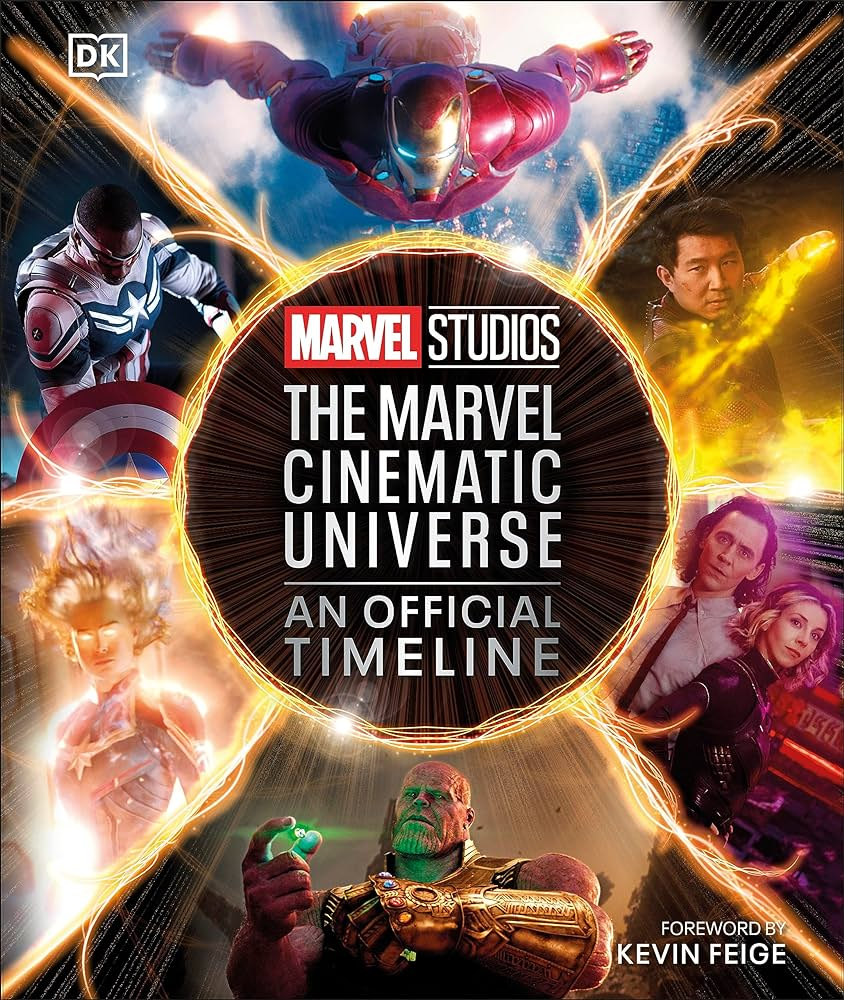
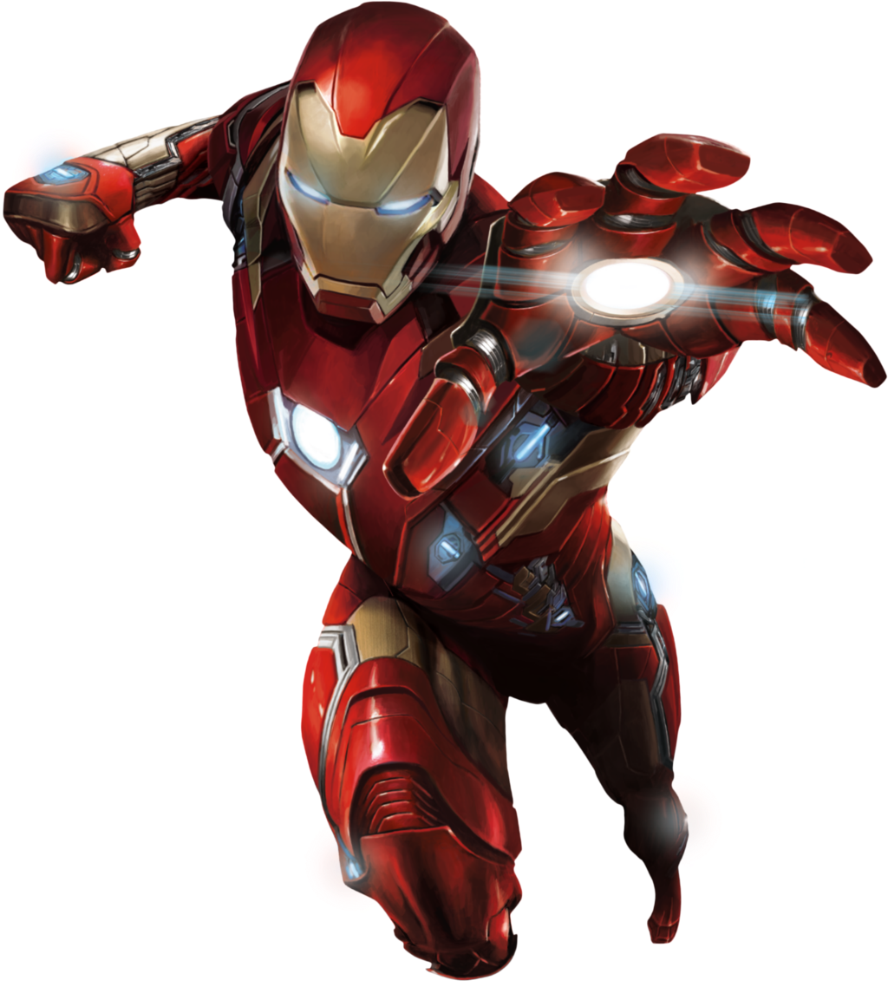

Universo cinematográfico de Marvel
El Universo cinematográfico de Marvel (MCU; en inglés: Marvel Cinematic Universe) es una franquicia de
medios y un universo compartido, centrada en una serie de películas de superhéroes producidas por Marvel
Studios. Las películas están basadas en personajes que aparecen en los cómics estadounidenses publicados
por Marvel Comics. La franquicia también incluye series de televisión, cortometrajes, series digitales y
literatura. El universo compartido, al igual que el Universo Marvel original en los cómics, se
estableció mediante cruce de elementos, escenarios, elenco y personajes comunes de la trama.
Marvel Studios estrena sus películas en grupos llamados "Fases", con las primeras tres fases conocidas
se conocen colectivamente como «The Infinity Saga», en español: «La saga Infinity».nota 1 y las
siguientes tres fases como «The Multiverse Saga». La primera película del MCU es Iron Man (2008), que
comenzó las películas de la Fase Uno culminando en la película crossover, The Avengers (2012). La Fase
Dos comenzó con Iron Man 3 (2013) y concluyó con Ant-Man (2015), mientras que la Fase Tres comenzó con
Capitán América: Civil War (2016) y concluyó con Spider-Man: lejos de casa (2019) culminado así «The
Infinity Saga». Black Widow (2021) es la primera película en Fase Cuatro, que concluyó con Black
Panther: Wakanda Forever (2022), e incluye también varias series de televisión, mientras que la Fase
Cinco comenzó con Ant-Man and the Wasp: Quantumania (2023), y concluirá con Thunderbolts* (2025). La
Fase Seis comenzará con The Fantastic Four (2025) y terminará con Avengers 5 (2026) y Avengers: Secret
Wars (2027).
Marvel Television expandió el universo a la televisión con Agents of S.H.I.E.L.D. en la cadena ABC en
2013, antes de expandirse aún más hacia el streaming con Marvel's Daredevil en Netflix en 2015 y
Marvel's Runaways en Hulu en 2017, y por último a la televisión por cable con Marvel's Cloak & Dagger en
2018 en Freeform. También produjeron la serie digital Marvel's Agents of S.H.I.E.L.D.: Slingshot. Marvel
Studios comenzó a producir sus propias series de televisión para streaming en Disney+, comenzando con
WandaVision en 2021 como el comienzo de la Fase Cuatro. El MCU incluye cómics relacionados publicados
por Marvel Comics, mientras que Marvel Studios ha producido series de cortometrajes directo para video y
una campaña de marketing viral para sus películas y el universo con el falso programa de noticias WHIH
Newsfront y The Daily Bugle.
La franquicia ha tenido éxito comercial, convirtiéndose en una de las franquicias de medios más
taquilleras de todos los tiempos y ha recibido críticas generalmente positivas de los críticos. El
estudio atribuyó el rendimiento de varios proyectos de «The Multiverse Saga» por debajo de las
expectativas al aumento en la cantidad de contenido que se produce después de Endgame, y comenzó a
disminuir su producción de contenido a partir de 2024. El MCU también ha inspirado varias atracciones
temáticas, una exhibición de arte, dos especiales de televisión, guías para cada película, múltiples
videojuegos vinculados y comerciales relacionados.


En Doctor Strange en el multiverso de la locura, el universo principal de los eventos del MCU fue designado como Tierra-616 (una designación mencionada por primera vez en Spider-Man: Far From Home), compartiendo el nombre del universo principal de Marvel Comics, mientras que otro universo fue designado como Tierra-838.373 La película animada de Sony, Spider-Man: Across the Spider-Verse (2023) hace referencia a los eventos de No Way Home, citando la realidad principal del MCU como Tierra-199999.374 Las Fases Cuatro, Cinco y Seis comprenderán «The Multiverse Saga».46 Con la publicación de The Marvel Cinematic Universe: An Official Timeline en octubre de 2023, Feige escribió en su prólogo que Marvel Studios solo consideraba, en ese momento, los proyectos desarrollados por ellos en sus primeras cuatro fases como parte de su «Sagrada Línea del Tiempo», pero reconoció la historia de otras películas de Marvel y series de televisión que existirían en el multiverso más grande dado que eran "canónicos para Marvel".375 En enero de 2024, Winderbaum reconoció que Marvel Studios había sido anteriormente "un poco cauteloso" acerca de lo que era parte de su Sagrada Línea del Tiempo , y señaló cómo había habido una división corporativa entre lo que creó Marvel Studios y lo que creó Marvel Television. Continuó diciendo que a medida que ha pasado el tiempo, Marvel Studios ha comenzado a ver "lo bien integradas que están las historias [de Marvel Television]" y personalmente se sintió "confiado" al decir que Daredevil era parte de la Sagrada Línea del Tiempo